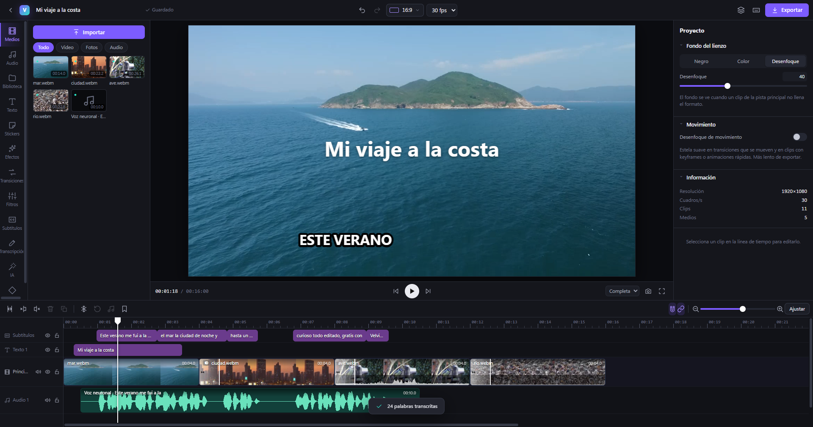
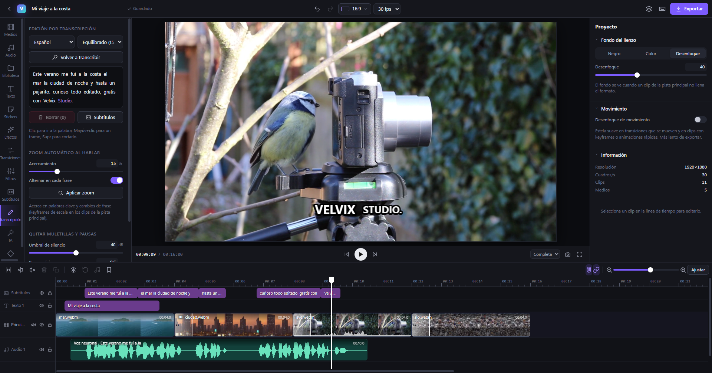
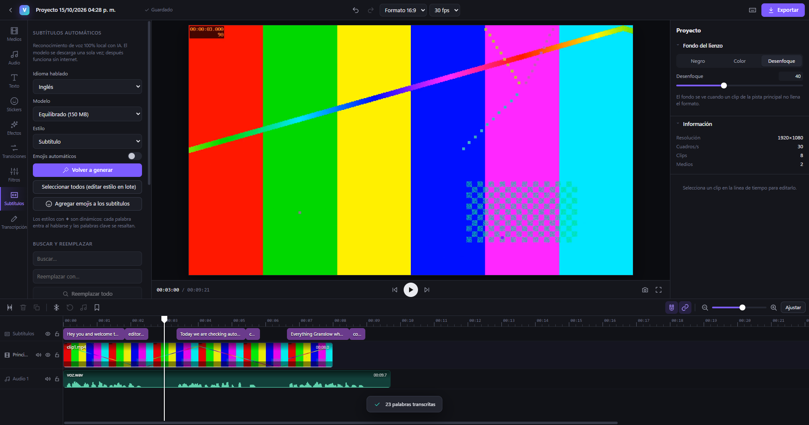
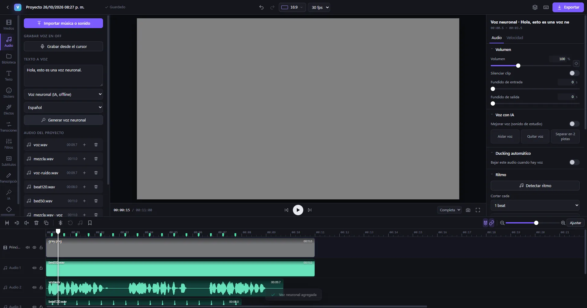
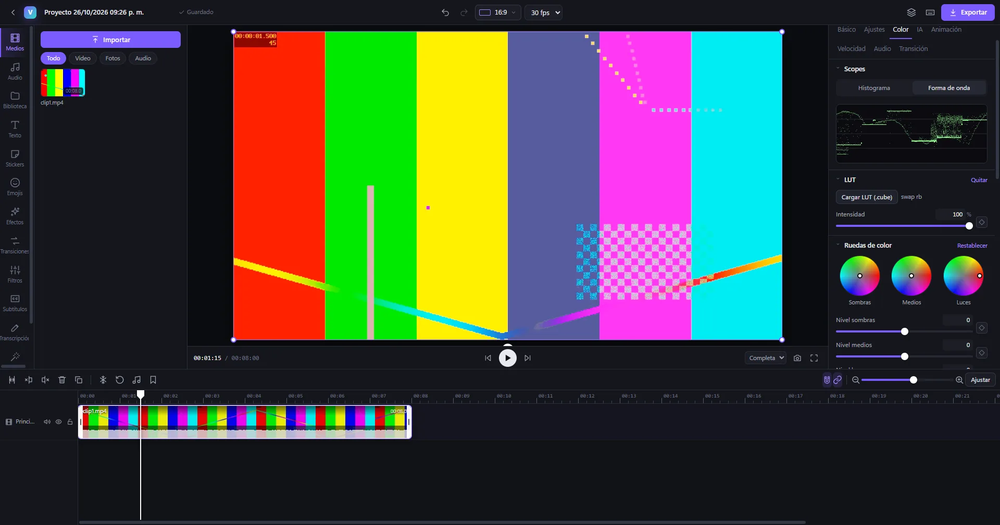

Velvix Studio es un editor de video para Windows con subtítulos automáticos, IA que quita fondos, color profesional y exportación para TikTok, Reels, Shorts y YouTube. Sin cuenta, sin marca de agua y todo se queda en tu PC.

Y algunas cosas que ni ellos tienen. La IA corre en tu propio equipo: el modelo se descarga una vez y después funciona sin internet.
Velvix transcribe lo que dices y te muestra el texto. Selecciona palabras, pulsa Supr y ese trozo desaparece del video. Detecta muletillas y silencios para que los quites todos de un golpe.

Elige el idioma, el estilo y pulsa generar. Las palabras aparecen al ritmo de tu voz con animaciones tipo pop o rebote, colores en las palabras clave y emojis automáticos.

Graba tu voz en off desde la app, genera una voz neuronal desde texto, separa voz y música, y deja que el ducking baje la música mientras hablas.

Ruedas de color, curvas, HSL, LUTs y scopes en tiempo real gracias a un motor WebGL. Lo que ves en la vista previa es exactamente lo que se exporta.

Algunas cosas típicas que puedes hacer en pocos minutos.
Pulsa cualquier botón Descargar de esta página y se baja el instalador Velvix-Studio-Setup.exe.
Abre el .exe y sigue el asistente.
Windows puede mostrar “Windows protegió tu PC” porque la app aún no tiene firma digital (cuesta dinero y el proyecto es gratis). Pulsa Más información → Ejecutar de todas formas.
En la pantalla de inicio crea un proyecto vacío o parte de una plantilla. Elige el formato (16:9, 9:16, 1:1) y los fps.
Pulsa Importar o arrastra tus archivos a la ventana. Llévalos a la línea de tiempo y usa los paneles de la izquierda (Texto, Stickers, Efectos, Transiciones, Filtros, Subtítulos, IA…). Selecciona un clip para editar sus propiedades a la derecha.
La primera vez que uses subtítulos u otra función de IA se descarga su modelo una sola vez. Después funciona sin internet.
Pulsa Exportar arriba a la derecha, elige un preset de plataforma o tu propia calidad, y listo. Si quieres, exporta también en otros formatos a la vez.
No hay trampa: no hay pagos, suscripciones, funciones bloqueadas ni anuncios. Es un proyecto personal que se comparte gratis.
No. Solo aparece un logo si tú lo añades desde el kit de marca.
No necesitas cuenta. Internet solo hace falta para descargar la app y, la primera vez, los modelos de IA que uses. Después todo funciona offline.
No. Todo el procesamiento, incluida la IA, ocurre en tu propio ordenador.
Por ahora solo hay instalador para Windows 10 y 11 de 64 bits.
Cualquier PC con Windows reciente sirve para editar. Para 4K y funciones de IA (quitar fondo, mejorar resolución) va mejor con una tarjeta gráfica decente y 8 GB de RAM o más.
Abre un issue en GitHub.
Sin registro, sin tarjeta, sin marca de agua.